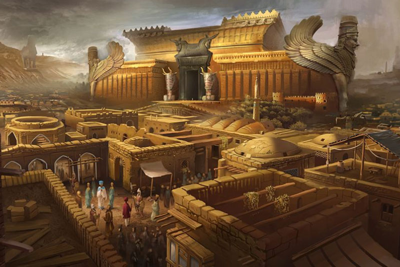

Infrastructure of Persian Empire
Everyone, it seems, is familiar with highways constructed by the ancient Romans. Those elegant, stone-paved roads pop up as supporting actors in every novel, film, or television show set in Roman times. Yet few people seem aware that this vast Roman transportation network was preceded by another system of imperial highways that was much older yet just as incredible—the Royal Road of Achaemenid Persia (ancient Iran). It is no exaggeration to call the Achaemenid Empire (550 BCE–330 BCE) the world’s first superpower. Persia conquered lands and conducted military operations on three continents: Asia, Africa, and Europe. Not even the mighty Assyrian Empire in Mesopotamia which preceded it could make such a claim. The Persians were at first considered minor players in the region. Nobody suspected that Persia would rise to greatness as it accompanied Median allies to bring down the Assyrian Empire. Yet in 550 BCE, Persian king Cyrus II—later dubbed “Cyrus the Great”—overturned his Median masters and established the first Persian Empire. The Persians became rulers of the civilized and densely populated Mesopotamian core. Over the next 64 years, Achaemenid Persia would push the boundaries of its expanding empire west into the Balkans, as far as modern Bulgaria, south as far as Libya in North Africa, and east into the jungles of the Indian subcontinent.
The Persian Road
Persia inherited the problems of ruling a vast empire. Difficulties resulted from the vast distances between the Persian capitals and outlying satrapies. This problem proved a tough nut for the Persians to crack. Ironically, the Persians’ rapid rate of expansion throughout its early years would only exacerbate the issue. Persia’s third ruler, Darius I (522–486 BCE) realized the potential benefit to be gained by connecting the empire’s various and distant parts. Along the way to earning the moniker “Darius the Great,” he initiated a program of road construction, maintenance, and administration that would last well beyond not only his lifespan, but that of his empire’s as well. The terrain encompassed by the Persian Empire varied widely from the foothills of the Zagros Mountains in Iran to the plains, deserts, and even swampy marshes of Central Mesopotamia. It included the lofty peaks of the Hindu Kush and the vast deserts of Egypt. Innumerable rivers required bridging or permanent ferries to cross. Much physical labor was required to make steep slopes and soggy marshes traversable.